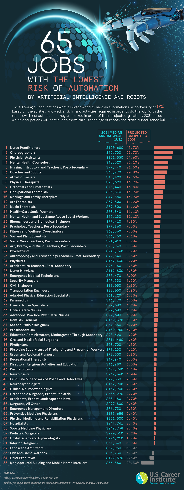

4. Mitos vs. Realidad: ¿La IA nos reemplazará?#
4.1. 🎭 Algunos Grandes Mitos sobre la IA#
Mito 1: “La IA va a reemplazar a todos los trabajadores”
Mito 2: “La IA es superinteligente y puede hacer cualquier cosa”
Mito 3: “La IA siempre es objetiva e imparcial”
Si deseas profundizar en lo referentes a los prejucios de la IA te sugiero leer “Armas de Destruccion Matemáticas. Cómo el BIG DATA aumenta la desigualdad y amenaza la Democracia” de Cathy O´Neil
4.2. 🔍 La Realidad del Impacto de la IA#
Lo que SÍ está pasando:
Automatización de tareas rutinarias:
Procesamiento de datos básicos.
Tareas repetitivas en manufactura.
Análisis de documentos estándar.
Atención al cliente básica (chatbot).
Transcripción automática de fuentes históricas.
Digitalización masiva de archivos.
“La IA es una gran herramienta y está cambiando el campo”,(…), los ingenieros de software van a escribir más código, dedicar menos tiempo a la investigación gracias a ChatGPT y Gemini, y todas las grandes herramientas para ayudar con la investigación, pero no van a reemplazar a los ingenieros de software”. Jess Feldman
Impacto actual:
Los médicos usan IA para diagnosticar más rápido.
Los abogados usan IA para revisar contratos.
Los diseñadores usan IA para generar ideas.
Los programadores usan IA como asistente de código.
Los historiadores usan IA para analizar documentos antiguos.
Los arqueólogos usan IA para descubrir patrones en sitios.
Los filólogos usan IA para descifrar textos históricos.
“Muchos hospitales están experimentando con esto. Están usando la IA para verificar el historial médico y los registros de los pacientes. La IA puede hacer eso a escala y sin error ni pérdida de memoria. Luego puede generar un resumen de lo que está sucediendo y dirigir al paciente al médico correcto para un examen adicional”. Xueming Luo
4.3. 📊 Datos sobre el Empleo y la IA#
4.3.1. Trabajos más susceptibles a automatización:#
Alto riesgo: Cajeros, operadores de telemarketing, contadores básicos, transcriptores y traductores.Fuente
Riesgo medio: Conductores, traductores básicos, analistas junior, bibliotecarios tradicionales. Fuente
Bajo riesgo: Terapeutas, maestros, ingenieros creativos, historiadores investigadores, críticos literarios. Fuente

4.4. 💡 Reflexiones para el Aula#
Preguntas para debatir:
¿En qué trabajos creen que la IA puede ser más útil como asistente que como reemplazo?
¿Qué habilidades humanas consideran más valiosas en la era de la IA?
¿Cómo podemos prepararnos mejor para trabajar junto con sistemas de IA?
¿Qué responsabilidades éticas tenemos al desarrollar y usar IA?
Actividad práctica:
“Mi futuro con IA”: Reflexionar sobre tu carrera deseada y cómo la IA podría impactarla, identificando oportunidades de colaboración y áreas donde las habilidades humanas seguirán siendo esenciales.
Conclusión